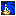
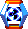
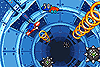

| ▼ リング |
【いつも最低1個は持っていましょう】
ATC内で入手できるリングを1個でも持っていれば、ギミックや敵の攻撃でダメージを受けてもダウンすることはありません。 しかし、持っていたリングはすべてフィールド上に散らばってしまうので、急いで拾い集めましょう。 |
| ▼ ポイントマーカー |
【ダウン後の再スタート地点】
ACT内のさまざまな場所にはポイントマーカーが配置されています。 このポイントマーカーに触れてチェックしておけば、ACT内でダウンしてもそのポイントマーカー地点から再スタートできます。 |
| ▼ 1up |
【チャレンジ回数の増やし方】
リングを100個集めるか、1UPアイテムを入手すると、チャレンジ回数が1回増えます。 さらに、得点5万点おきにチャレンジ回数は1回増えます。 |
| ▼ アイテムボックス |
【壊してアイテムをゲットしましょう】
アイテムを見つけても、アイテムボックスを破壊しなければ入手できません。 特殊攻撃などで壊して、中に入っているアイテムを手に入れましょう。 |
| ▼ スペシャルステージ |

【点在するリングを集めましょう】
スペシャルステージへはフィールドにあるスペシャルバネを使って行くことができます。 スペシャルステージで規定数のリングを集めると、カオスエメラルドが入手できます。 |
| ▼ ダウン |
【ACT内には危険がいっぱい】
リングを1つも持っていない状態でダメージを受けるとダウンし、チャレンジ回数が1回減ってしまいます。 また、ダメージ以外でもダウンする場合があります。
（床のない場所から落ちたり、水中で酸素を補給できない場合など） |
| ▼ コンティニュー |
【再チャレンジでクリアをめざしましょう】
ダウンすることでチャレンジ回数が減っていき、0になるとゲームオーバーになってしまいます。 しかし、コンティニュー回数が残っていれば、再チャレンジする事ができます。 |
|